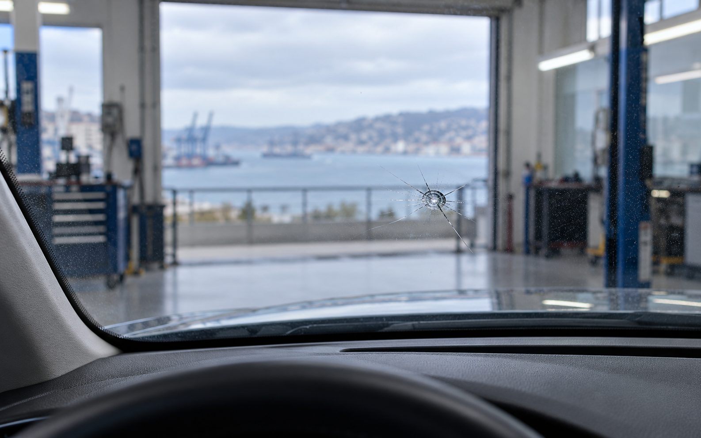
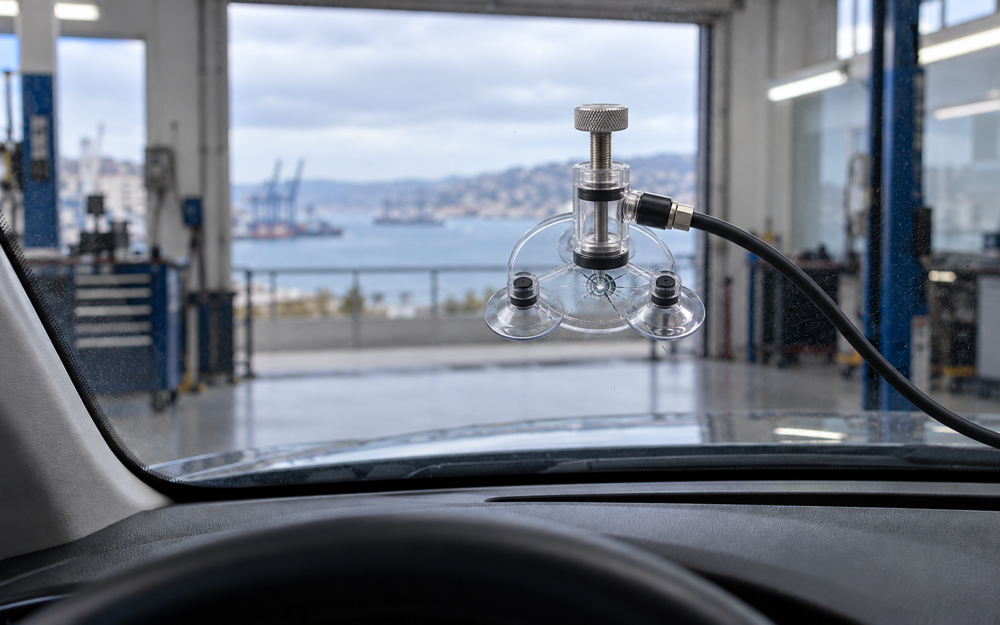
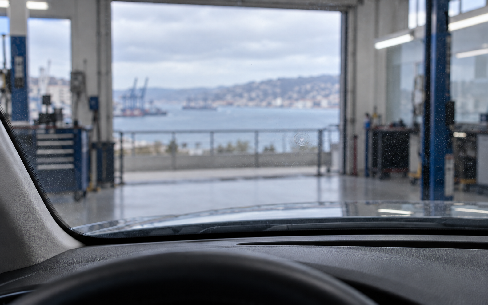

El daño se inspecciona
La ubicación, el diámetro y la profundidad definen si conviene intervenir. La reparabilidad depende del caso.
Revísalo antes de que avance.
Identifica el tipo de daño con una guía visual. El resultado orienta el siguiente paso; una foto o revisión presencial sigue siendo necesaria.
Guía visual · no reemplaza la evaluación en taller
Tipo de dañoElige lo que más se parece.
Al seleccionar, continúas con la zona y el tamaño.
Selecciona el daño, su ubicación y tamaño. La orientación ayuda a ordenar la consulta; la revisión del vidrio sigue siendo necesaria.
Resultado automatizado y orientativo, sin revisión humana ni cotización.
Desplázate para ver el principio de una reparación de piquete. El encuadre no cambia: así se entiende qué se interviene y qué marca puede permanecer.



AntesLa ubicación, el diámetro y la profundidad definen si conviene intervenir. La reparabilidad depende del caso.
El sistema extrae aire e inyecta resina para estabilizar el punto y reducir el riesgo de propagación.
La prioridad es recuperar estabilidad. Es normal que el vidrio conserve una señal óptica leve.
Primero se evalúa el daño, la posición y el equipamiento del vehículo. Después se define el trabajo.
Piquetes y trizaduras pequeñas pueden ser reparables cuando están lejos del borde y no comprometen la visión.
Cuando el daño es extenso o está en una zona crítica, se revisa el parabrisas adecuado para el modelo y versión.
La rotura de vidrios laterales o traseros suele requerir reemplazo. Disponibilidad y compatibilidad se confirman caso a caso.
Si el vehículo integra asistencia a la conducción, la consulta debe identificar el equipamiento para orientar la calibración posterior.
Este espacio publicará únicamente fotografías verificadas y autorizadas por Soimar.
Este archivo se abrirá cuando Soimar apruebe las primeras fotografías reales y sus descripciones.
Tipo de daño, ubicación, patente, marca y modelo.
Se ordenan los antecedentes sin prometer una solución.
Compatibilidad, disponibilidad y condiciones antes de agendar.
La evaluación presencial confirma el trabajo.
Trae el informe de la planta. Una trizadura que dificulta la visión puede requerir intervención; la evaluación define si corresponde reparar o cambiar.
Reúne los datos necesarios antes de coordinar. En esta vista previa, la información permanece en tu navegador.
El registro disponible es favorable, pero su muestra aún es acotada. La confianza principal debe sostenerse en una evaluación clara, datos verificables y expectativas honestas.
Depende del tipo, tamaño y ubicación del daño, además de las capas comprometidas. La guía orienta; la revisión confirma.
Puede quedar una marca leve. El objetivo principal es estabilizar el daño y explicar con honestidad el acabado esperable.
Una foto general del parabrisas y otra cercana, enfocada, con una referencia de tamaño. Evita reflejos intensos sobre el daño.
El tiempo depende del daño, el vehículo, la disponibilidad de la pieza y el equipamiento asociado. Se confirma antes de agendar.
Valparaíso, Chile
Av. Francia 965
Valparaíso, Chile
Abre tu aplicación preferida para planificar la ruta. Los horarios y el teléfono se publicarán cuando estén confirmados.